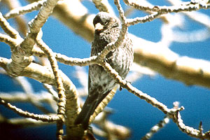

These photographs accompany records that have been recently submitted to the committee. This record has been ACCEPTED.

Black Rosy-Finch
Leucosticte atratus
12 Feb 95, Aspendell, INY 1995-033
© 1995 Alan N. Wight
Back to CBRC Rare Bird Photos